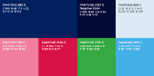
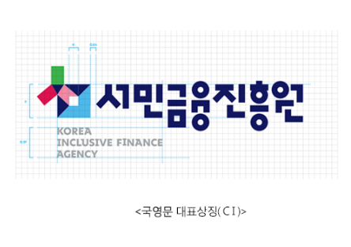

- 서민금융진흥원
- 서민금융통합지원센터 기관문양(BI)
- 국민행복기금 기관문양(BI)
·서민금융진흥원 상징
서민금융진흥원의 상징(CI)은 서민금융진흥원의 비전과 가치를 담아 디자인한 심벌과 국영문 상징(CI)타입으로 구성되어 있으며, 매체의 특성과 적용환경에 따라, 혹은 작은 크기로 적용 시 영문 상징(CI)타입을 생략하여 표기할 수 있습니다.
-
 서민금융진흥원의 상징(CI)은
서민금융진흥원의 상징(CI)은
서민의 ㅅ을 사람(人)으로, ㅁ을 열린 창의 빛으로 재해석하여, 서민의 원스톱 금융파트너로서의 역할을 표현하며, 서민금융진흥원을 통해 개개인에게 가장 적합한 맞춤형 금융 서비스를 제공받고, 보다 밝고, 투명한 미래로 나아가는 , 긍정적이면서도 능동적인 이미지를 형상화하고 있다.
-
 서민금융진흥원의 색채는
레드(활력), 핑크(행복), 그린(안정), 블루 (희망), 네이비(신뢰) 등 다채로운 색상과 삼각형(화살표), 사각형(동서남북), 사선 (상승/확산) 등의 다양한 도형 조각들이 한 데 모여, 하나의 심벌을 구성함으로써 폭넓은 지원 안내와 다양한 금융 혜택을통해, 서민과 함께하는 지속가능한 금융솔루션을 제공함을 의미한다.
 서민금융진흥원의 한글로고는
서민금융진흥원의 한글로고는
기하학적인 한글의 장점을 살려, 역동적이면서도 리드미컬하게 구성하여, 심벌과의 시각적 연계성은 물론, 단단하면서도 융통성있는 이미지를 반영하고 있다.

- ※ 유의사항
-
►서민금융진흥원의 CI는 서민금융진흥원을 상징하는 대표적인 시각상징물로서 CI의 변형사용은 불가합니다.
►서민금융진흥원의 CI는 영리 목적의 상업광고에 사용불가함을 알려드립니다.
- ·서민금융진흥원 캐릭터 ‘포용이’
- 희망과 진심 그리고 언제나 열정이 넘치는 서민금융진흥원 공식 캐릭터 ‘포용이’를 소개합니다.